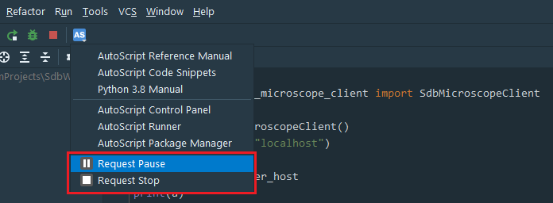
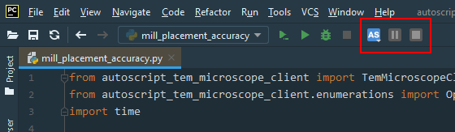

The AutoScript plugin in PyCharm extends its ability to control script execution. It allows the user to pause or stop the script at an appropriate time (see User guide: Pause/Stop script execution).
Once you click on the AS icon in the main toolbar, the drop-down menu with "Request Pause" and "Request Stop" entries is displayed.

The icons have the following meaning:
- The item is disabled, request can not be made. Either the script is not running or another action has already been requested.
- The item is enabled and clicking it will request the corresponding action.
- The corresponding action is requested. It is possible to cancel the request at this moment by clicking the item again.
- The script is paused. By clicking the item the script execution will resume.
By default, the request menu items are accessible only from the AS drop-down menu to keep the main toolbar uncluttered. However, in some cases where the request buttons are used frequently, it may be impractical to access them from the drop-down menu. In this case you can pin the request buttons to the main toolbar by following the instructions below:
Right-click on the main toolbar area (next to the "AS" button) -> Click Customize Menus and Toolbars -> Expand Menus and Toolbars/Main Toolbar folder -> Select the button next to which you want to place the request buttons (e.g. AutoScript Actions) -> Click the "+" sign -> Click Add action... -> Expand Plugins -> Expand AutoScript Browser -> Select Request Pause/Stop actions-> Click OK
The main toolbar with the two pinned buttons will look like this:
In the current version of AutoScript, it is not possible to make pause/stop requests for multiple running scripts in PyCharm. If multiple scripts are running in one instance of PyCharm editor, the Request Pause/Stop buttons work only for the most recently executed script.